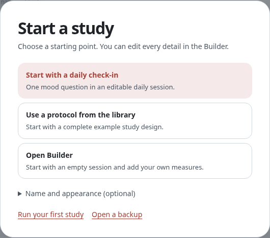
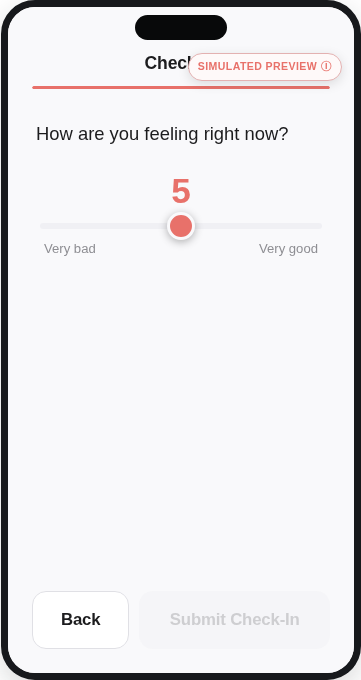
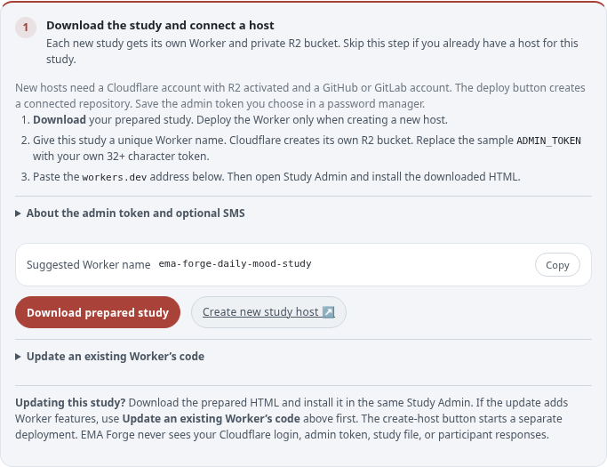
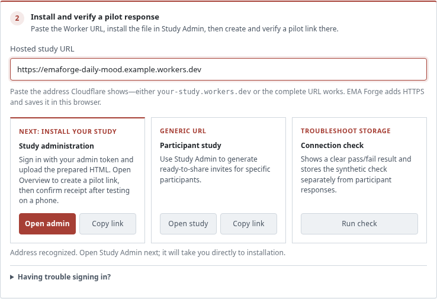
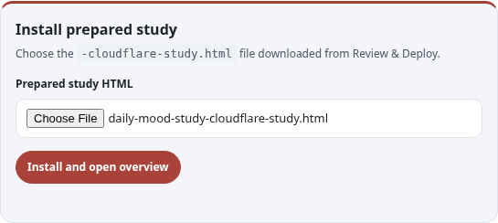

Run your first study
Make a one-question mood check-in, open it on a phone, and confirm your first pilot response arrived.
Use a laptop for setup and a phone for the pilot. You can build and preview without accounts. To put the study online, you’ll need a Cloudflare account with R2 storage activated and a GitHub or GitLab account.
Build and preview
-
Start with a daily check-in
Open Builder and choose Start with a daily check-in. If you already have a draft, click New study to see this screen.

-
Try the question yourself
Click Preview at the top of Builder, then Begin Session. You should see “How are you feeling right now?” Answer the question and finish the preview. Preview responses stay in the preview.
Just exploring? You can stop here and come back to the draft on this browser.

Put it online
-
Download your study file
Give your study a name in Overview. Add consent text in Onboarding. Then choose Review & Deploy → Download prepared study. Keep the file ending in
-cloudflare-study.html.Practice consent text for a staff-only test
Practice run only. I understand that this exercise is for the study team to test the phone workflow with sample answers. I will use made-up data and will not enter my name, contact details, or health information. No research participants are enrolled in this test.
Replace this text with your study’s approved consent before enrolling anyone.

-
Create your Cloudflare host
Create a GitHub account and a Cloudflare account. In Cloudflare, open Storage & databases → R2 → Overview and complete R2 setup. R2 has a free allowance and requires billing setup.
Back in EMA Forge, click Create new study host. Follow the prompts to connect GitHub and name the Worker. For
ADMIN_TOKEN, make up a unique password with at least 32 characters and save it in your password manager. Click Deploy.Look for an address ending in
.workers.dev. Copy it.Cloudflare’s R2 setup guide · Cloudflare’s example setup screens
-
Install your study
Paste the address into Hosted study URL in EMA Forge. Click Open admin and sign in with the password you just made. Choose the downloaded file and click Install and open overview.


Look for the Overview page with Create pilot link.
Run the phone pilot
-
Answer the check-in on your phone
In Study Admin, choose Daily session → Create pilot link → Copy for phone. Open the link on your phone, answer the question with a made-up response, and finish the check-in.
Look for “Data uploaded successfully.”

-
Confirm the response arrived
Back in Study Admin, click Refresh status on the pilot card. When you see Pilot verified, your phone check-in made it into storage. It stays out of research counts and exports.